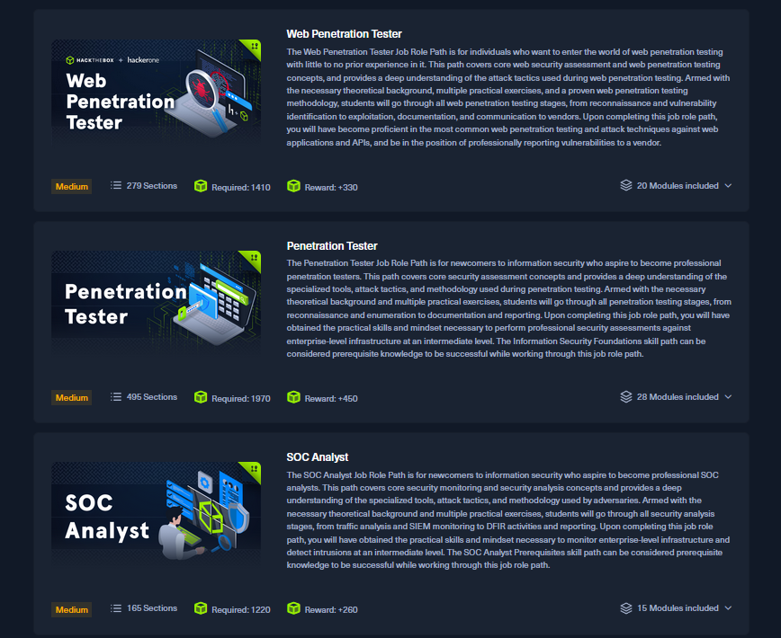

Tietoa minusta
Nimeni on Antti Jokinen ja olen erittäin kiinnostunut kyberturvallisuudesta. Halusin luoda nettisivun, josta saisi ajankohtaista tietoa tulevista tapahtumista, sekä samalla jakaa joitain mahdollisia vinkkejä ja uutisia.
Nimeni on Antti Jokinen ja olen erittäin kiinnostunut kyberturvallisuudesta. Halusin luoda nettisivun, josta saisi ajankohtaista tietoa tulevista tapahtumista, sekä samalla jakaa joitain mahdollisia vinkkejä ja uutisia.
Osaamiseni koostuu harrastuneisuudesta ja asioista joita olen oppinut töissä, sekä koulussa. Tällä hetkellä osaamiseni painottuu "Blue team" puolelle eli puolustavaan kyberturvallisuuteen. Ajanmittaan minulle on tullut kuitenkin osaamista usealta eri osa-alueelta, kuten tietoverkoista ja "Red teamingistä" eli hyökkäävän puolen tietoturvasta.
Pidän oppimispäiväkirjaa, sekä kerään tapahtumat ja uutiset yhdelle verkkosivustolle. Sivustolla minun on myös tarkoitus näyttää osaamistani, eli sivusto toimii myös portfoliona.
TryHackMe tarjoaa opastettuja polkuja, labroja, King of The hill pelimuodon ja vaihtelevia tapahtumia, jotka selittävät tehtävän vaiheet askel askeleelta. Hyvä valinta, kun haluat oppia käytännössä ja tehdä tehtäviä turvallisessa virtuaaliympäristössä.
Mitä tarjoaa: Blue- ja Redteam opetusta, Linuxia ja Windowsia, sekä voit myös itse kehittää haasteita.
Alempana kuvaaja TryHackMe verkkosivuston mahdollisista poluista:
Hack The Box keskittyy käytännön penetraatiotestaukseen ja haasteisiin. Hyvä ympäristö kehittyneemmille harjoituksille ja verkko-/sovellus-skannaukselle.
Mitä tarjoaa: Rekisteröitäviä koneita, lab-ympäristöjä, kilpailuja.
Alempana kuvaaja HackTheBox verkkosivuston mahdollisista poluista:
OverTheWire tarjoaa CTF tyyppisiä tehtäviä (esim. Bandit), jotka opettavat Unix-komentoja, skriptausta, salauksen perusteita.
Mitä tarjoaa: Linux ympäristöön liittyviä tehtäviä, perus- ja edistyneen tason tehtäviä.
Alempana kuvaaja OverTheWire verkkosivuston etusivusta: